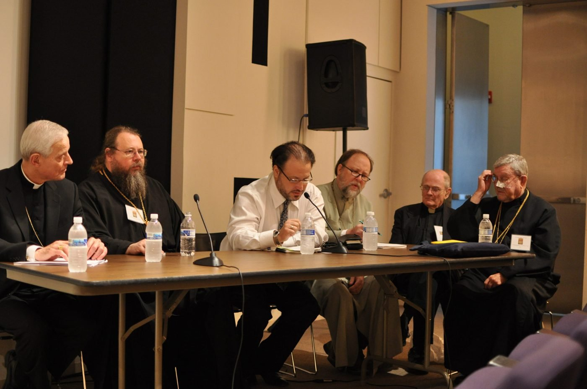

Digital & Media Initiatives
A library that travels
Streaming lectures, a publishing house for the Christian East, and new podcasts and documentaries.
A panel discussion among the speakers at OL XIV East, (L to R) Archbishop Donald Wuerl, Metropolitan Jonah, Elias Damianakis, Father Peter Galadza, Father John Ford, Archimandrite Robert Taft, SJ.
OLTelevision and Eastern Christian Publications are available now. The online courses, mobile app, documentaries, and podcast network listed below are planned for the Institute and will open in stages.

Free from Eastern Christian Publications
ECPubs daily prayer app
The Byzantine Daily Office in your pocket: the Hours and Vespers, the saint of the day with icon and hymns, morning reflections, and Theosis magazine each month.
App StoreGoogle PlayTitles
On OLTelevision
- Interactive online courses and virtual classroom capabilities
- Mobile app for on-demand learning
Video Content
- Recorded lectures and conferences
- Documentary series
- Virtual pilgrimage experiences
Listen
Podcast Network
Shows
- Weekly theological discussions
- Daily prayer and scripture
- Interview series with scholars

Six volumes. Tap one to jump to its lectures.
In the store now
Lectures from Oxford
Over 100 lectures by Metropolitan Kallistos of Diokleia as books, videos and audio podcasts.
 Likoudis Legacy Foundation
Likoudis Legacy Foundation